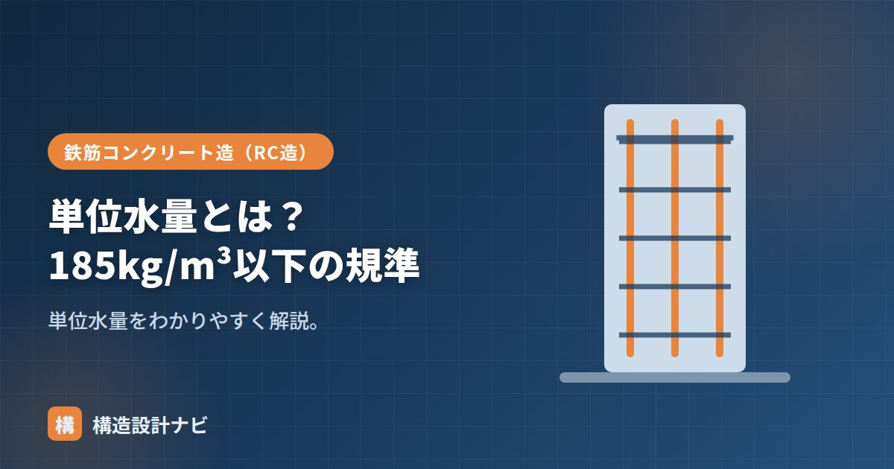

単位水量とは？185kg/m³以下の規準

単位水量とは、コンクリート1m³に含まれる水の質量（kg/m³）です。コンクリートの品質を左右する配合値の一つで、できるだけ少なくするのが原則です。単位水量はコンクリートの練混ぜ時の軟らかさ（スランプ）に直接影響するため、施工性を確保しつつも品質を落とさないよう、適切な範囲に収める管理が求められます。
- 単位水量は1m³中の水の質量で、少ないほど品質面で有利になる
- JASS5では上限185kg/m³が目安として定められている
- 水を増やさずにスランプを確保するには減水剤の活用が基本
意味
練混ぜに使う水の量で、スランプ（軟らかさ）に直接効きます。水を増やせば軟らかく打ちやすくなりますが、品質面では不利になります。コンクリートは水・セメント・骨材を練り混ぜて作りますが、このうち水の量だけを増減させると、強度や耐久性に大きな影響が及ぶため、単位水量は配合設計の中でも特に重要な管理項目とされています。
なぜ少なくするのか
水量を増やすとコンクリートは軟らかくなり施工しやすくなりますが、余分な水は硬化後にコンクリート内部で微細な空隙（ポア）として残り、強度低下や透水性の増加を招きます。また、余分な水が抜ける過程で乾燥収縮が大きくなり、ひび割れの原因にもなります。ブリーディング（練混ぜ水が表面に浮き上がる現象）も水量が多いほど顕著になり、表面の品質低下につながります。こうした理由から、単位水量は「必要なスランプが得られる範囲で、できるだけ少なく」することが原則とされているのです。
185kg/m³以下の規準
JASS5では、単位水量の上限を185kg/m³とし、「できるだけ少なくする」ことを求めています。水が多いと、乾燥収縮・ひび割れ、ブリーディング、強度・耐久性の低下を招くためです。
水セメント比・スランプとの関係
- 水セメント比：W/C＝単位水量÷単位セメント量。単位水量を抑えると、同じW/Cでもセメントを減らせる。
- スランプ：単位水量を増やすとスランプは上がるが品質が下がる。AE減水剤で「水を増やさず軟らかく」するのが基本。
つまり、必要なスランプを、できるだけ少ない単位水量で得ることが配合設計の要点です。
荷卸し後にポンプの流れが悪いからと現場で加水されてしまう場面を何度も見てきました。単位水量は配合計画書の数値通りに打ってこそ意味があるので、打設立会いでは加水の有無を必ず目視で確認しています。
単位水量が品質に与える影響（図解）
「水を増やすと打ちやすいが品質が落ちる」という関係を、影響の連鎖で整理すると理解しやすくなります。
現場での単位水量の管理
単位水量は配合計画で決まりますが、実際に打ち込まれるコンクリートが計画どおりかを現場で確認することも重要です。
| 管理の方法 | 内容 |
|---|---|
| 納入書の確認 | 配合計画書と照合し、単位水量・スランプ・呼び強度が指定どおりか確認する |
| スランプ試験 | 荷卸し地点でスランプを測る。指定値より大きい場合、加水が疑われる |
| 単位水量測定 | 専用の測定器（エアメータ法・静電容量法など）で直接測る。重要構造物で実施 |
| 加水の禁止徹底 | ポンプの詰まりや流動性の低下を理由とした現場加水を認めない。運搬時間の管理も重要 |
1m³あたりわずか10kgの加水でも、水セメント比は数%上昇し、圧縮強度は数N/mm²低下します。トラック1台（約4.5m³）に対してバケツ数杯の水を足すだけで、設計基準強度を割り込む可能性があるのです。しかも加水は記録に残らないため、後から原因を特定することが難しく、構造体の品質を根本から損ないます。
配合の例で見る単位水量
実際の配合表では、単位水量は次のように他の材料と並んで記載されます。
| 項目 | 値の例 | 意味 |
|---|---|---|
| 単位水量 W | 175 kg/m³ | 1m³中の水（185以下に収める） |
| 単位セメント量 C | 318 kg/m³ | 1m³中のセメント |
| 水セメント比 W/C | 175 ÷ 318 ＝ 55.0% | 強度・耐久性を左右する最重要値 |
| スランプ | 18 cm | 軟らかさ（施工性） |
この例で、施工性を上げたいからと単位水量を185kg/m³に増やすと、セメント量を変えなければW/Cは58.2%まで上昇し、強度・耐久性が低下します。同じ軟らかさを保ちながら水を減らすには、AE減水剤や高性能AE減水剤の使用が有効です。
よくある質問
Q1. 単位水量185kg/m³は法律で決まっているのですか？
建築基準法で直接定められた数値ではなく、日本建築学会の建築工事標準仕様書（JASS5）で示されている値です。JASS5では単位水量の上限を185kg/m³とし、できるだけ少なくすることを求めています。ただし公共工事の仕様書など、発注者によってはより厳しい値（175kg/m³以下など）を要求される場合もあるため、案件ごとの仕様書を確認する必要があります。
Q2. 単位水量を減らすと施工しづらくなりませんか？
水だけを減らせば確かに硬く打ちにくくなります。そこで用いるのが減水剤・AE減水剤・高性能AE減水剤です。これらはセメント粒子どうしの凝集をほぐして分散させるため、水を増やさずに流動性を高められます。高性能AE減水剤なら、同じスランプを保ったまま単位水量を大幅に減らすことも可能で、高強度コンクリートの実現に不可欠な材料になっています。
Q3. 単位水量と単位セメント量はどちらを先に決めますか？
実際の配合設計では、まず設計基準強度と耐久性から水セメント比（W/C）の上限が決まります。次に、施工に必要なスランプを確保できる単位水量を設定し、その2つから単位セメント量（C＝W÷(W/C)）が決まる、という順序になります。単位水量を小さくできれば、同じW/Cでもセメント量を減らせるため、水和熱によるひび割れの抑制やコスト面でも有利になります。
まとめ
- 単位水量はコンクリート1m³中の水の質量（kg/m³）。
- JASS5で上限185kg/m³。乾燥収縮・ブリーディング防止のため少なくする。
- スランプは単位水量で上がるが、減水剤で水を増やさず確保するのが基本。